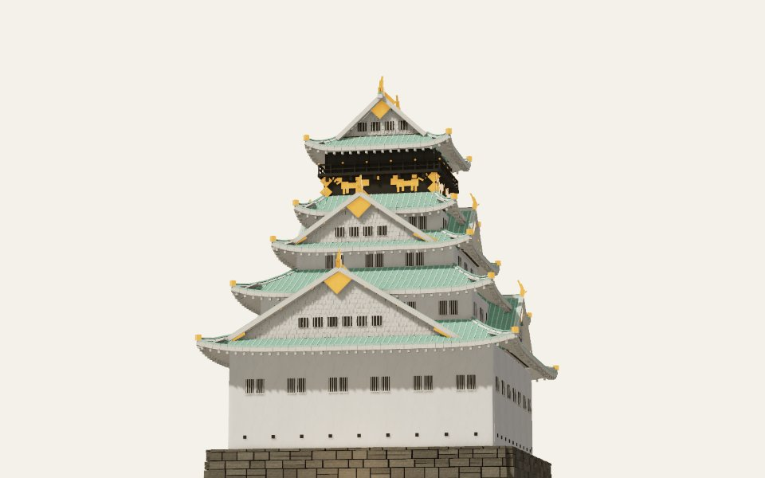
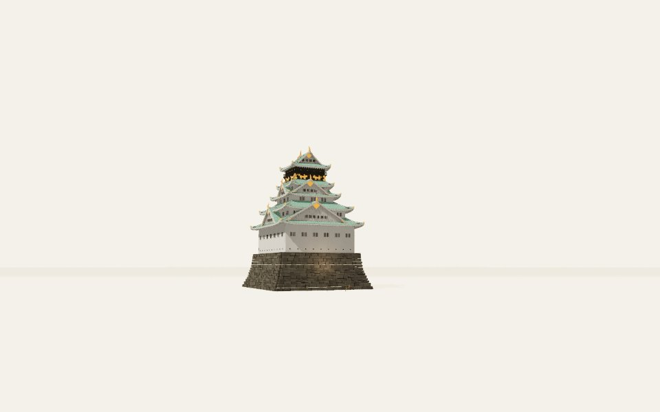
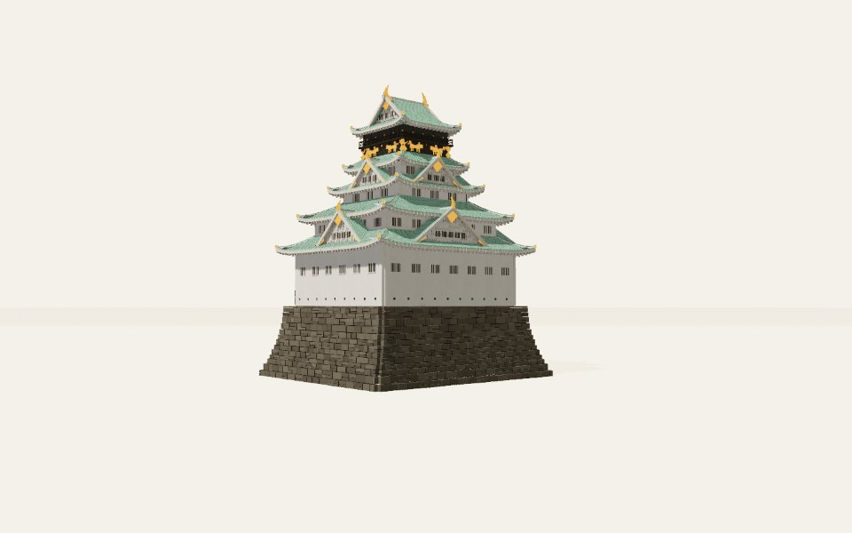
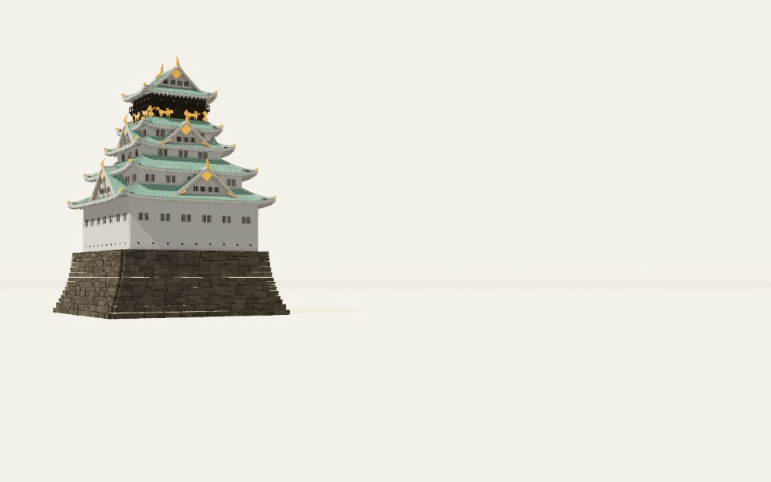
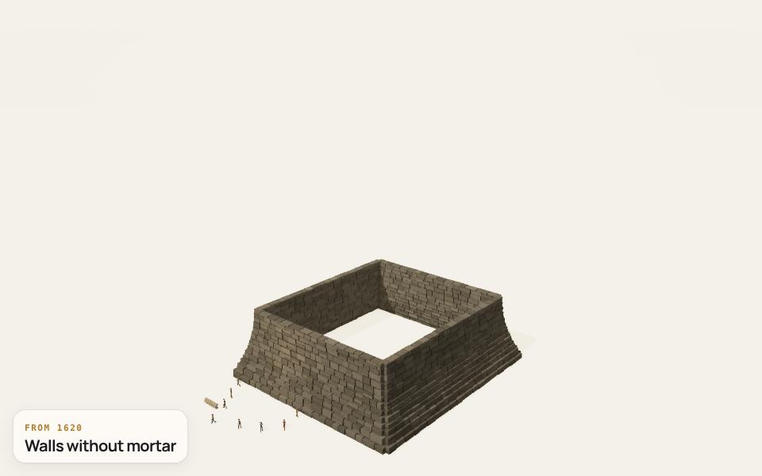
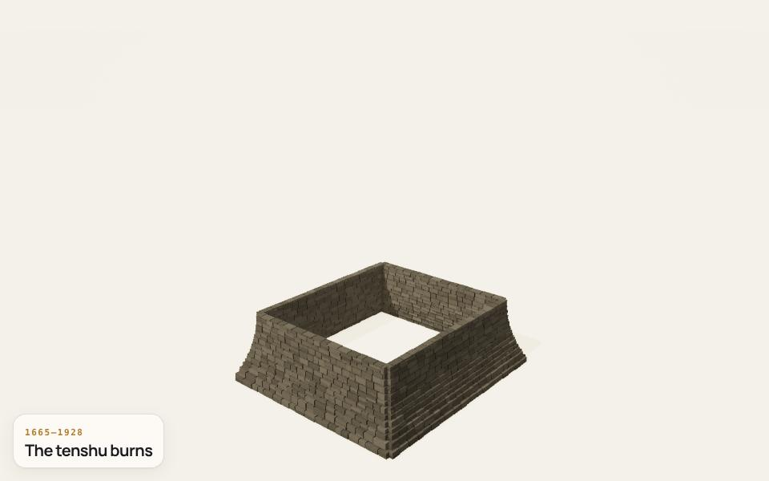
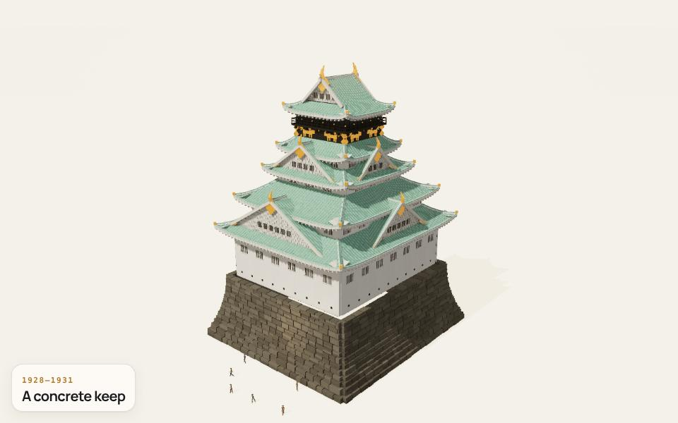

ref 0 · south · 173.8°, -9.9°


Left: the reference photo. Middle: the model from the same viewpoint. Right: the photo laid over the model at half strength. Write what differs in evidence.comparisons.









